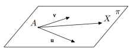
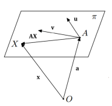

Vaatame tasandit π ruumis \(E_3\). Olgu sellel tasandil antud punkt A
ning kaks mittekollineaarset ruumi E3 vektorit u ja v.
Tasandit määravat mittekollineaarset vektorite süsteemi {u, v} ⊂ \(E_3\)
nimetatakse \(\bold{tasandi}\) \(\bold{rihiks}\), vektoreid u ja v
tasandi rihivektoriteks

Esitame selle võrrandi veel kohavektorite kaudu. Olgu ruumi \(E_3\)
nullpunkt O. Olgu punktide A, X ∈ π kohavektorid vastavalt OA ja OX.
Võrrandit \(\bold{OX} = \bold{OA} + t_1u + t_2v, t_1, t_2 ∈ \R\),
nimetatakse \(\bold{tasandi}\)\(\bold{parameetriliseks}\)
\(\bold{vektorvõrrandiks}\) \(\bold{kohavektorite}\) \(\bold{kaudu}\)

Võrrandit
\(\bold{AX} = t_1 u + t_2 v, t_1, t_2 ∈ \R\),
nimetatakse tasandiparameetriliseks vektorvõrrandiks. Muutujaid \(t_1\)
ja \(t_2\) nimetatakse parameetriteks.
Võrrandeid
\(x = a_1 + t_1 u_1 + t_2 v_1\),
\(y = a_2 + t_1 u_2 + t_2 v_2\), \(t_1, t_2 ∈ \R\),
\(z = a_3 + t_1 u_3 + t_2 v_3\),
nimetatakse tasandi \(\bold{parameetrilisteks}\) \(\bold{võrranditeks}\)
\(\bold{koordinaatides}\).
Võrrandit \(A_x + B_y + C_z + D = 0\) nimetatakse tasandi
\(\bold{võrrandiks}\) \(\bold{üldkujul}\) ehk tasandi üldkujuliseks
võrrandiks ning vektorit n = (A, B, C) nimetatakse tasandi
\(\bold{normaalvektoriks}\).
Sirget saab määrata kahe etteantud punkti abil. Tavaliselt kasutatakse
järgmist võimalust: sirgel fikseeritakse üks punkt A ja nullist erineva
vektori s abil antakse sirge siht. Tähistame sirget tähega l. Olgu X ∈ l
sirge suvaline punkt, siis punkte A ja X ühendab vabavektor AX ∈ E
Võrrandit
\(\bold{AX} = ts, t ∈ \R,\)
nimetatakse \(\bold{sirge}\) \(\bold{parameetriliseks}\)
\(\bold{vektorvõrrandiks}\).
Esitame selle võrrandi kohavektorite kaudu. Olgu O ruumi E nullpunkt.
Olgu punktide A, X ∈ l kohavektorid vastavalt OA ja OX.
Võrrandit
\(\bold{OX} = OA + ts, t ∈ \R\)OX = OA + ts, t ∈ R,
nimetatakse sirge \(\bold{parameetriliseks}\)
\(\bold{vektorvõrrandiks}\) \(\bold{kohavektori}\) \(\bold{abil}\).
Võrrandeid
\(x = a_1 + ts_1\) ,
\(y = a_2 + ts_2\), t ∈ R,
\(z = a_2 + ts_2\),
nimetatakse sirge \(\bold{parameetrilisteks}\) \(\bold{võrranditeks}\)
\(\bold{koordinaatides}\).
Võrrandeid
\(\frac{x-a_1}{s1}=\frac{y-a_2}{s2}=\frac{z-a_3}{s3}\)
nimetatakse sirge \(\bold{kanoonilisteks}\) \(\bold{võrranditeks}\)
ruumis E3.
Sirge võrranditeks üldkujul ehk üldkujulisteks võrranditeks nimetatakse
süsteemi
\(A_1x + B_1y + C_1z + D_1 = 0\) ,
\(A_2x + B_2y + C_2z + D_2 = 0\)
kus sirge sihivektor s avaldub antud kahe tasandi normaalvektori
\(n_1=(A_1, B_1, C_1)\) ja \(n_2=(A_2, B_2, C_2)\) vektorkorrutisena:
\(s = n_1 × n_2.\)
Punkti P \(\bold{kauguseks}\) sirgest l nimetame sellest punktist
sirgeni tõmmatud ristlõigu pikkust. Tähistame seda d(P, l).
Punkti P ∈ \(E_3\) kaugus sirgest l ⊂ \(E_3\) arvutatakse valemiga
\(d(P, l) = \frac{|AP × s|}{|s|}\),
kus A on suvaline punkt sirgel l ja s on sirge sihivektor
Punkti P kauguseks tasandist π nimetatakse sellest punktist tasandini
tõmmatud ristlõigu pikkust. Tähistame seda d(P, π).
Punkti P ∈ \(E_3\) kaugus sirgest π ⊂ \(E_3\) arvutatakse valemiga
\(d(P, π) = \frac{|⟨AP, n⟩|}{|n|}\),
kus A on suvaline punkt tasandil π ja n on tasandi normaalvektor.
Sirgete \(l_1\) ja \(l_2\) vaheliseks nurgaks nimetatakse nende sirgete
sihivektorite \(s_1\) ja \(s_2\) ning \(s_1\) ja \(-s_2\) vahelistest
nurkadest vähimat ehk
\(∠(l_1, l_2) = min{∠(s_1, s_2), ∠(s_1, −s_2)}.\)
Siis \(∠(l_1, l_2) ∈[0, \frac{π}{2}]\), sest \(∠(s_1, s_2) + ∠(s_1,
−s_2) = π\)
Sirgete \(l_1\) ja \(l_2\) vahelise nurga koosinus leitakse valemiga
\(cos(∠(l_1, l_2)) = \frac{|⟨s_1, s_2⟩|}{|s1||s2|}\),
kus \(s_1\) on sirge \(l_1\) ja \(s_2\) on sirge \(l_2\) sihivektor.
Tasandite \(π_1\) ja \(π_2\) vaheliseks nurgaks nimetatakse nende
tasandite normaalvektorite \(n_1\) ja \(n_2\) ning \(n_1\) ja \(-n_2\)
vahelistest nurkadest vähimat ehk
\(∠(π_1, π_2) = min{∠(n_1, n_2), ∠(n_1, −n_2)}.\)
Siis \(∠(π_1, π_2) ∈ [0, \frac{π}{2}]\),
Tasandite \(π_1\) ja \(π_2\) vahelise nurga koosinus leitakse valemiga
\(cos(∠(π_1, π_2)) = \frac{|⟨n_1, n_2⟩|}{|n1||n2|}\),
kus \(n_1\) on tasandi \(π_1\) ja \(n_1\) on tasandi \(π_2\)
normaalvektor
Sirge l ja tasandi π vaheliseks nurgaks nimetatakse sirge l ja tema
ristprojektsiooni l′ vahelist nurka ning seda tähistatakse ∠(l, π).
Sirge l ja tasandi π vahelise nurga siinus leitakse valemiga
\(sin(∠(l, π)) = \frac{|⟨s, n⟩|}{|s||n|}\),
kus s on sirge l sihivektor ja n on tasandi π normaalvektor.